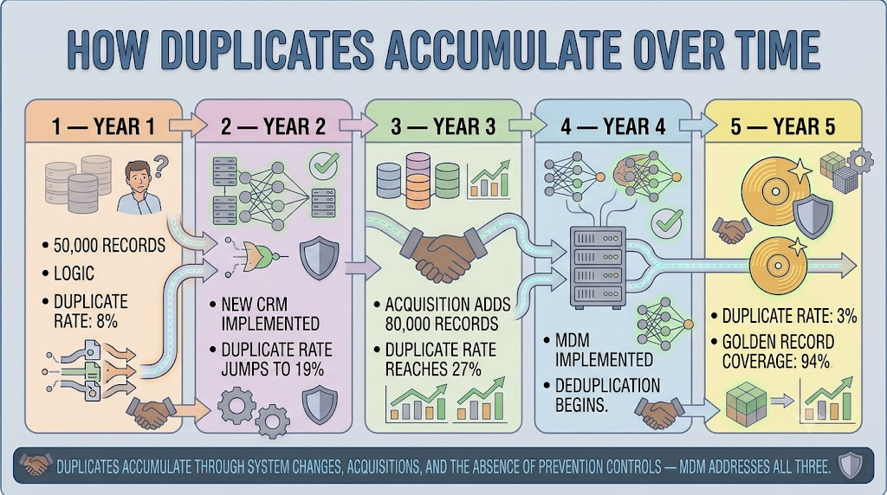
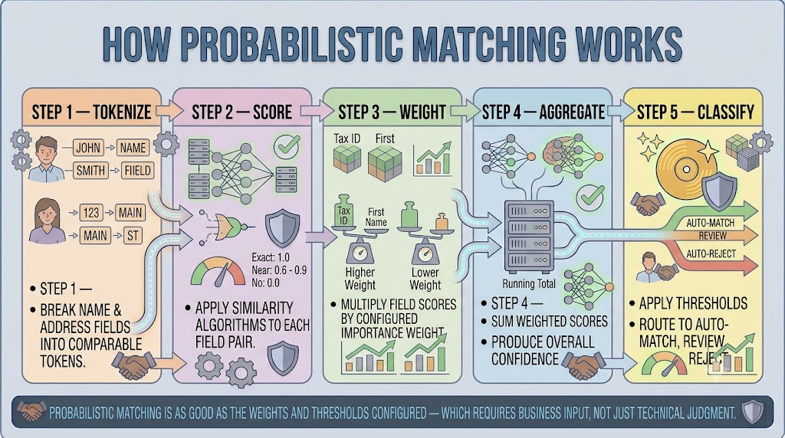
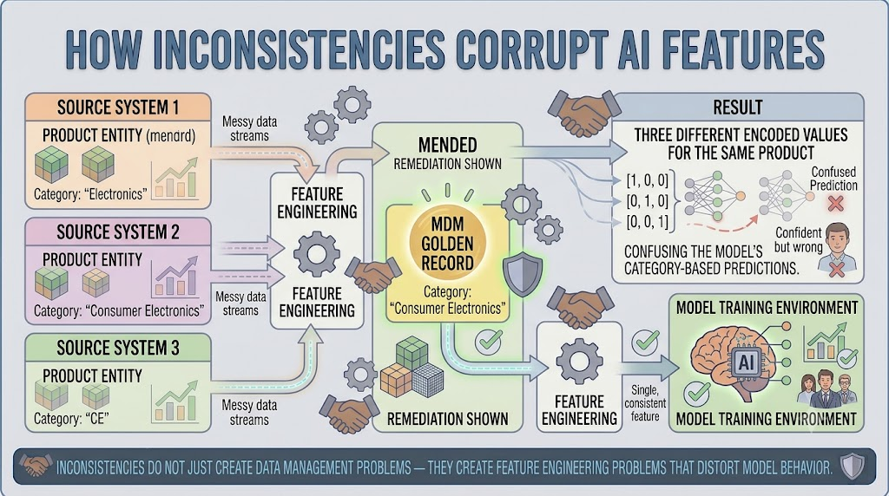
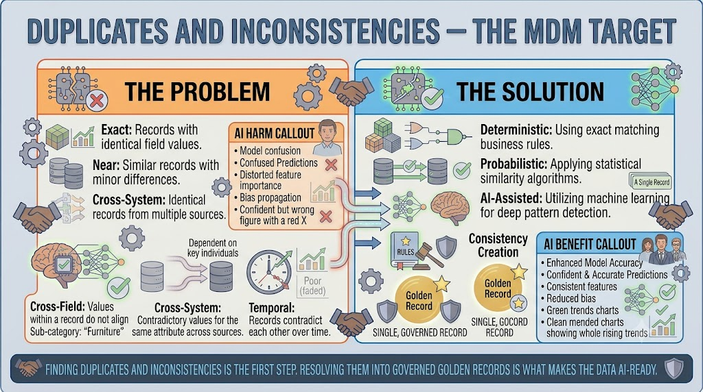

Identifying Duplicates and Inconsistencies
Module support notes
The Scale of the Duplicate Problem
Duplicate records are not a one-time problem that organizations can solve and move on from. They are a symptom of systemic gaps in how data is created, validated, and governed across the organization's technology landscape. System migrations introduce duplicates when legacy records are loaded without deduplication checks. Acquisitions introduce duplicates when two organizations' data is merged without entity resolution. Manual data entry introduces duplicates when validation rules are absent or inconsistently applied.
MDM addresses these root causes — not just the existing duplicate population — by establishing the governance controls and matching capabilities that prevent new duplicates from accumulating at the same rate.

Probabilistic Matching in Practice
Probabilistic matching is a powerful technique but a configurable one — its performance depends heavily on the weights assigned to each field and the thresholds that define the review zone. The weight assigned to a customer's email address relative to their phone number should reflect the organization's knowledge of how reliably each field is populated and how often it changes.
The threshold that defines the review zone should reflect the organization's tolerance for false positives relative to false negatives — a higher auto-match threshold reduces review burden but increases the risk of merging records that should remain separate.
- Tokenize — break name and address fields into comparable tokens
- Score — apply similarity algorithms to each field pair, from exact match to no match
- Weight — multiply each field score by its configured importance weight
- Aggregate — sum weighted scores to produce an overall match confidence score
- Classify — apply thresholds to route each pair to auto-match, review, or auto-reject
Tip
Business input into matching configuration is not optional — it is what makes the output trustworthy. Involve domain owners when setting field weights and review thresholds. They know which attributes are reliably populated, which change frequently, and what the cost of a false merge looks like in their operational context.

Inconsistencies and AI Feature Engineering
Feature engineering — the process of transforming raw data into the inputs an AI model actually uses — is extremely sensitive to inconsistencies. When the same entity carries different values for the same attribute across source systems, feature engineering pipelines must make arbitrary choices about which value to use, often without visibility into which source is most reliable.
The result is features that encode the inconsistency rather than resolving it — and models that learn from that encoded confusion. MDM golden records eliminate this problem at the source by providing a single, governed value for every attribute before feature engineering begins.
Warning
Inconsistencies do not just create data management problems — they create feature engineering problems that distort model behavior. A product entity classified as "Electronics," "Consumer Electronics," and "CE" across three source systems produces three different encoded feature values for the same product, corrupting every category-based prediction the model makes.

Finding duplicates and inconsistencies is the diagnostic work. Resolving them into governed golden records is what transforms the data into something AI-ready.
